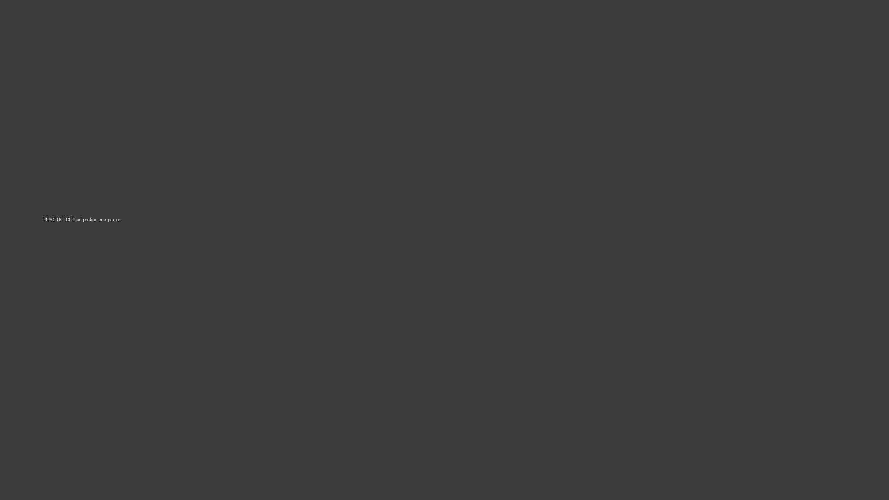

В каждой семье с кошкой есть «избранный» — человек, которому кошка идёт сама, ложится на ноутбук именно когда он работает и мурчит именно на его коленях. Остальные могут годами жить рядом и получать в лучшем случае нейтральное отношение. Это не случайность и не вредность: за выбором кошки стоит серьёзная этология. И у «вторых» есть шанс подняться в рейтинге.
В 2019 году исследователи из Университета штата Орегон под руководством Кристины Витале Кэссиди провели эксперимент по образцу классического «теста странной ситуации» — того самого, что используют для изучения привязанности у младенцев. Кошек помещали в незнакомое помещение с хозяином, затем хозяин уходил и возвращался.
Результат был однозначным: большинство кошек (около 64%) проявили к своим хозяевам надёжную привязанность — точно такую же, как дети к родителям. При возвращении хозяина они успокаивались, переставали исследовать пространство тревожно и возвращались к нормальному поведению. Остальные 36% показали тревожную или избегающую привязанность — тоже паттерны, идентичные детским.
Вывод: кошки формируют настоящую эмоциональную привязанность, а не просто «ассоциацию с едой». И эта привязанность направлена в первую очередь на конкретного человека.
Кошка не делает выбор осознанно и рационально — он складывается из накопленного опыта взаимодействий. Но у «избранных» людей есть общие черты.
Период социализации у кошек — от 2 до 7 недель. Котёнок, которого много держали на руках, разговаривали с ним, знакомили с разными людьми, вырастает в кошку, способную привязываться к нескольким людям.
Котёнок, проведший ранний период в минимальном контакте с людьми (уличный или «клеточный» старт), формирует привязанность сложнее и часто выбирает одного человека — того, кто был самым терпеливым в процессе социализации уже в доме.
Это объясняет, почему взятые с улицы кошки нередко «прикипают» к одному человеку особенно крепко: он стал для них единственным «безопасным якорем» в незнакомом мире.
Кошка не избегает — она оценивает риски и выгоды. С точки зрения кошки, незнакомый или «непредсказуемый» человек — это существо с непонятными намерениями. Непредсказуемость стрессирует кошку гораздо сильнее, чем мы думаем.
Типичные причины, по которым кошка держит дистанцию:
Хорошая новость: рейтинг меняется. Кошка переоценивает людей постоянно — на основе накопленного опыта. Вот что работает.
Дети — самая сложная категория для кошки. Они непредсказуемы, двигаются резко, издают громкие звуки и часто хотят «поймать» кошку. С кошачьей точки зрения — это тревожная среда.
Чтобы кошка приняла ребёнка, нужна работа с обеими сторонами. Ребёнка нужно учить: не хватать, не преследовать, давать кошке уходить. Кошке нужны места, куда ребёнок не добирается — полки, закрытая комната, высокая лежанка. Когда кошка получает контроль над ситуацией, она сама начнёт приближаться к ребёнку на своих условиях.
Если кошка резко изменила «рейтинг» привязанности — перестала идти к «избранному» или, наоборот, стала навязчиво липнуть ко всем — это изменение в поведении стоит упомянуть на ближайшем осмотре. Иногда изменение социального поведения отражает физический дискомфорт: кошке больно, и она ищет помощи, или, наоборот, избегает прикосновений из-за боли. Ветеринар поможет исключить физические причины, если поведенческая картина изменилась резко.
Материал носит информационный характер и не заменяет очную консультацию ветеринара.